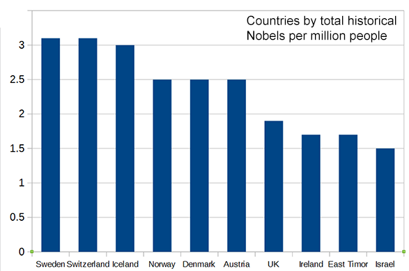
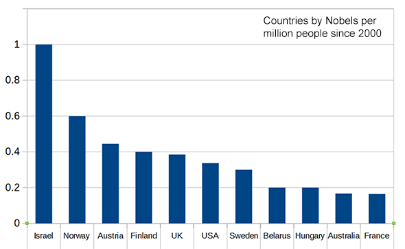
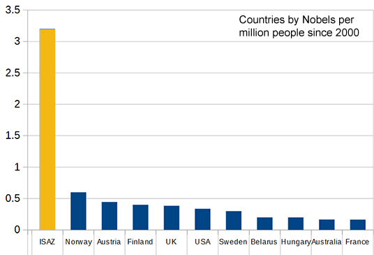
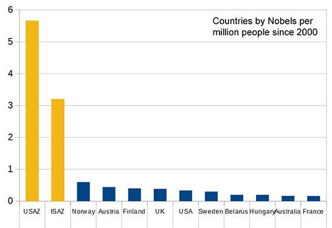

2017년 5월 29일
지난 금요일, 나는 헝가리 과학 천재들의 현상에 대해 논하며, 그것이 헝가리에 아슈케나지 유대인(Ashkenazi Jews)이 고도로 밀집되어 있기 때문일 것이라는 추측을 내놓았다. 이에 대해 한 댓글 작성자는 이스라엘의 아슈케나지 유대인 밀도가 훨씬 더 높음에도 불구하고, 그 결과는 그만큼 인상적이지 않다는 점을 지적했다.
이런 논리라면 이스라엘은 천재들의 온상이 되었어야 한다. 실제로 그곳에 똑똑한 사람들이 많은 것은 사실이지만, 이스라엘의 대학 중 상위 10위, 혹은 상위 100위 안에 드는 곳조차 없다. 노벨상 수상자의 비율 또한 인상적인 수준이 아니다.
이러한 반론은 표면적으로는 일리가 있다. 인구 대비 노벨상 수상자 명단을 보면 이스라엘은 노르웨이나 영국 같은 나라들에 밀려 10위라는 다소 평범한 순위에 머물러 있다.

이것은 아슈케나지 유대인(Ashkenazi-Jew) 기반의 그 어떤 이론에게도 유망해 보이지 않는다.
반면, 해당 목록은 역대 노벨상 수상 총수를 현대 인구수로 나눈 것이다. 이는 오래된 국가들에 유리하게 작용한다. 노르웨이는 1903년부터 노벨상을 수집해 왔지만, 이스라엘은 1948년이 되어서야 건국되었다. 게다가 이스라엘인들은 초기 몇 세대 동안 키부츠(kibbutzim, 이스라엘의 집단 농장)를 세우고, 인프라를 구축하고, 적들과 싸우느라 꽤 바빴다. 노벨상 수상자를 배출할 수 있는 훌륭한 대학 시스템을 구축하는 데는 시간이 걸린다. 따라서 노르웨이와 영국은 불공평한 선점 우위를 점하고 있었던 셈이다.
나는 2000년 이후에 수상한 노벨상만을 대상으로 분석을 다시 수행했다(2000년이라는 숫자가 크고 깔끔하기도 하며, 내가 선택적 중단(optional stopping)을 피하려 노력하고 있다는 신호를 주기 때문이다). 자료원은 국가별 노벨상 수상자 명단을 참고했으며, 이중 국적자나 이민자 등을 포함할지 여부는 위키피디아(Wikipedia)의 판단에 따랐다. 결과는 다음과 같다.

이 기간 동안 이스라엘이 1인당 노벨상 수상자 수가 단연 가장 많다는 것을 알 수 있다.
원래의 이론은 특히 아슈케나지 유대인(Ashkenazi Jews)에 관한 것이었다. 이스라엘 인구 중 아슈케나지 계열은 약 3분의 1에 불과하다(나머지는 다른 계통의 유대인이거나, 팔레스타인인, 또는 그 외의 비유대인 소수 민족이다). 아슈케나지 사람들만 따로 분리해 보면, 그래프는 다음과 같은 모습이 된다.

ISAZ는 별개의 인구 집단으로 간주되는 이스라엘 아슈케나지 유대인(Israeli Ashkenazi Jews)을 의미한다. 한편으로는 이스라엘에서 가장 성공한 인구 집단을 다른 국가 전체와 비교하는 것이 다소 불공평할 수 있다. 하지만 다른 국가들의 가장 성공한 인구 집단을 뽑는다면 그들 역시 아슈케나지 유대인일 것이므로, 결국 상관없는 일이다. 이스라엘 아슈케나지인들의 1인당 노벨상 수상률이 그 어떤 국가보다 약 5배나 높기 때문에, "이스라엘은 어떻게 되는가?"라는 반론은 공식적으로 반박된 것으로 간주하겠다.
그래프 하나 더:

USAZ는 미국 아슈케나지 유대인(US Ashkenazi Jews)을 의미하며, 이들은 이스라엘 사촌들보다 1인당 노벨상 수상 횟수가 두 배 더 많다. (이 수치를 얼마나 진지하게 받아들여야 할지는 모르겠다. 이스라엘 데이터는 단 8명의 노벨상 수상자를 기반으로 하므로 표본 오차의 가능성이 크기 때문이다.)
정확한 수치를 파악하기는 어렵지만, 이스라엘 출신 노벨상 수상자들 중 상당수(아마 절반 이상일 것이다)가 주로 미국 등 해외에서 최고의 성과를 낸 것으로 보인다.
이스라엘은 1948년부터 2002년까지 과학 분야 노벨상을 단 한 번도 수상하지 못했다(그동안 문학과 평화상은 수상했다). 이제는 더 많은 상을, 그것도 인구 대비 어느 나라보다 훨씬 더 많이 받고 있지만, 대부분은 자국민이 해외 대학으로 유학을 갔을 때의 일이다. 이는 여전히 갈피를 잡지 못하고 허둥대는 이스라엘 교육 시스템의 모습과 일맥상통하는 듯하다.
그렇다면 교육 시스템이 좀 더 제대로 자리를 잡게 되면, ISAZ의 노벨상 수상률이 대략 두 배로 뛰어 USAZ의 수준과 비슷해진다는 뜻일까? 잘 모르겠다.
이 분석만 놓고 보면, 사람들이 더 밀집해 있을수록 모두가 이득을 얻는다는 지난 포스트의 이론은 사실이 아닌 것으로 보인다. 이스라엘은 인구 대비 아슈케나지 유대인(Ashkenazi Jews)의 비율이 미국보다 약 10배나 높지만, 여전히 미국보다 성과가 낮다.
이 데이터들이 아슈케나짐(Ashkenazim)이 헝가리에서 갑작스럽게 배출된 위대한 과학자들의 원인이었을지도 모른다는 지난 포스트의 결론을 부정하는 것은 아니다. 하지만 교육 시스템이 그리 중요하지 않았을 것이라는 암묵적인 결론에는 잠재적인 의문을 제기한다. 이에 대해서는 이번 주 후반에 더 자세히 다루겠다.
제공해주신 텍스트에 번역할 내용이 없습니다. 번역할 본문을 입력해 주세요.
헝가리 고등학생 과학 경진대회 프로젝트로 본 원자폭탄홈헝가리 교육 III: 부다페스트인들의 핵심 가르침 마스터하기
Please provide the English text you would like me to translate. You have provided the guidelines and the essay title, but the source text itself is missing. Once you provide the paragraph, I will translate it immediately according to your instructions.